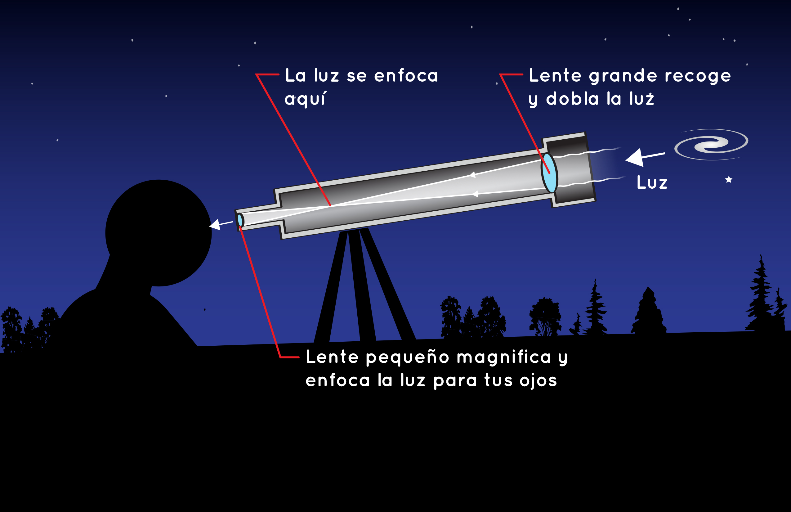

me gusta averiguar como es su tecnologia
me gustaria saber como es su funcionamiento
Es para ver como funciona un telescopio desde adentro.
Es mirar por dentro las diferentes tecnolgias de aumento que tiene este.

Apertura: El diámetro del lente o espejo. Determina el brillo y la nitidez.Distancia focal: El largo del tubo. Determina los aumentos disponibles..